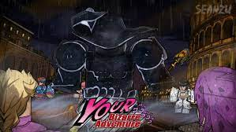
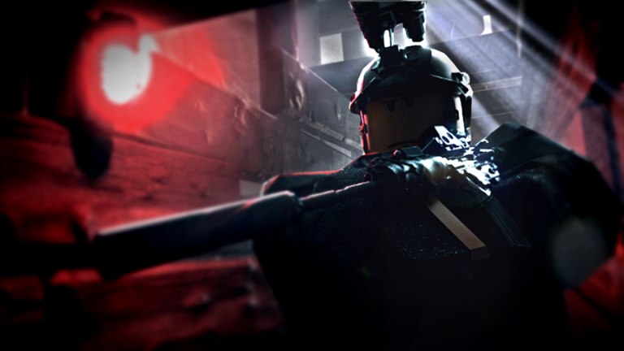
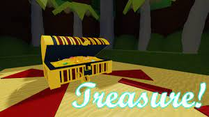

<!DOCTYPE html>
<html lang="en"></html>

<head>
    <meta charset="UTF-8">
    <meta name="viewport" content="width=device-width, initia-scale=1.0">
    <title>Website Richie</title>
</head>

<body background="wallpaper.jpg">
    <span style="background-color:#0fc6f8;">
   
    <p>1. YBA (Your Bizzare Adventure). Your Bizarre Adventure is an anime-style Roblox title with RPG elements. The game tasks you with learning unique spiritual abilities known as STANDS to fight against tough gangs. Along the way, you need to collect items and level up your character to succeed in your journey.</p>
    
    <br>
    <br>
    <br>
    <p>2. Blox Fruit. Blox Fruit is a anime based free roam and roleplay game, in this game you can become the most powerful person to ever live in the seas, and conquer enemies</p>
    
    <br>
    <br>
    <p>3. Shindo. This game is a re-imagining of the original Shinobi Life, a Naruto-style ninja game where you explore an open world, and fight against opponents in the arena, using your martial prowess and abilities. But you can also use spins to get freebies, which can make your character stronger.</p>
    
    <br>
    <br>
    <br>
    <p>4. Frontlines DEMO. Frontlines DEMO is a FPS shooter game where there is 2 teams that fight against each other to achive goals such as 100 kills (TDM) 300 points (Flare Domination) 300 points (King Of The Hill)</p>
    
    <br>
    <br>
    <br>
    <p>5. Build A Boat For Treasure. The game's objective is to build a boat using materials and equipment and sail it as far as possible down a river consisting of various biomes.</p>
    